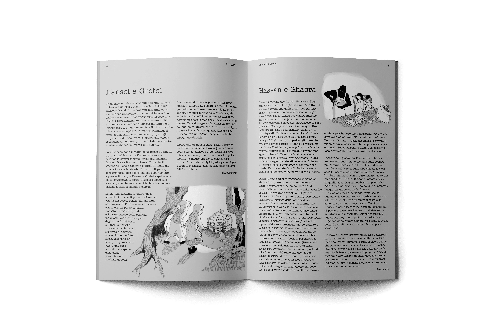
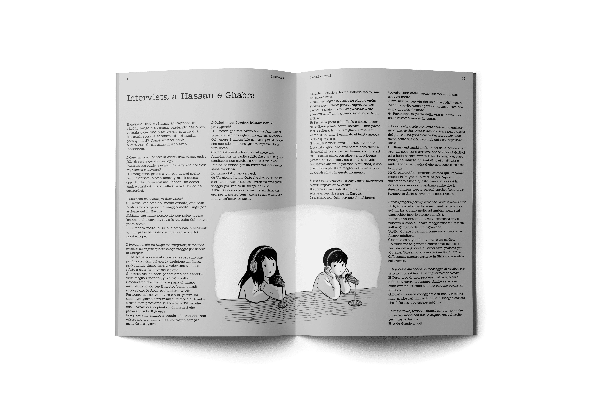
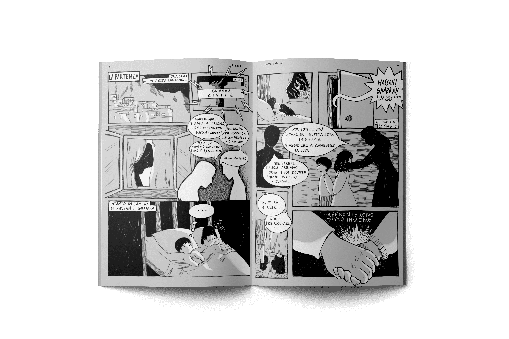
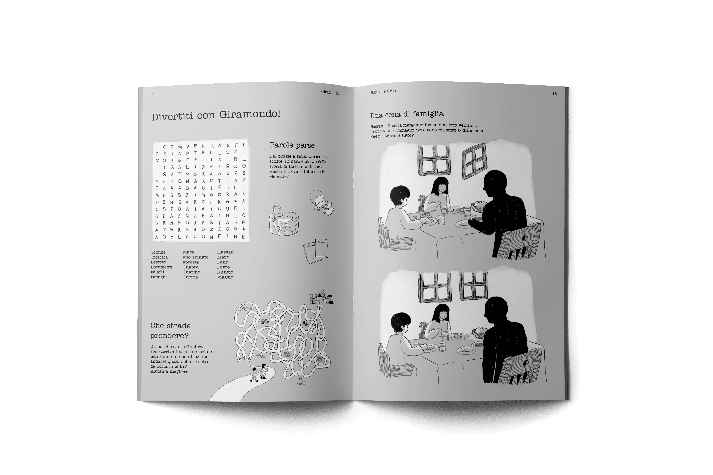
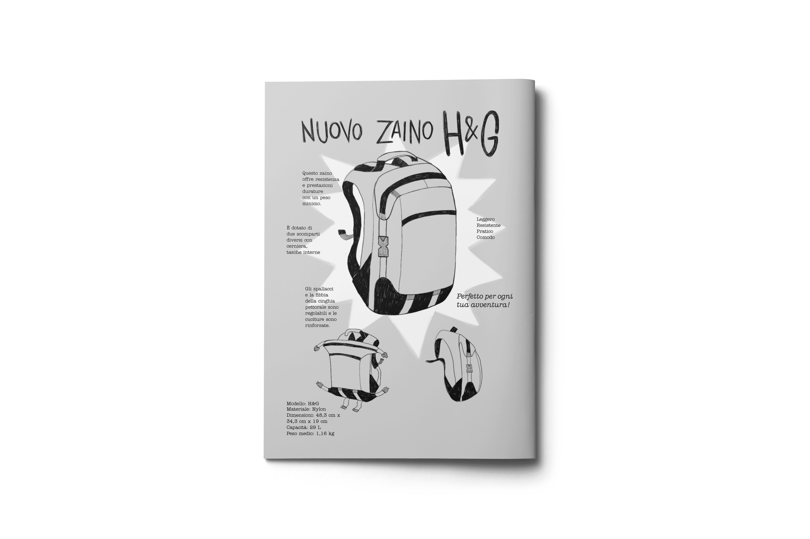

GIRAMONDO
Il progetto, intitolato Giramondo, fiabe dei nostri giorni, consiste in una rivista per l’infanzia che reinterpreta le fiabe classiche in una prospettiva contemporanea e globale. Ogni numero propone un viaggio attraverso il mondo insieme ai suoi protagonisti, offrendo ai giovani lettori nuovi punti di vista a partire da storie familiari.
Il primo numero è ispirato alla fiaba di Hansel e Gretel, reinterpretata come il viaggio di Hassan e Gabra, due bambini siriani costretti dai genitori a lasciare il proprio paese per sfuggire alla guerra e cercare un futuro migliore in Europa.
La rivista non si limita al racconto della loro storia, ma include anche una ricetta tematica e attività interattive ispirate alla narrazione, invitando i bambini a leggere, giocare e riflettere sul mondo contemporaneo attraverso il linguaggio del racconto.




